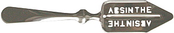

|
Absinthe Absinthe combines the potency of hard liquor with both the thrill of a dangerous poison and a ritual elaborate as that of any intravenous drug's. The beverage even has an enticing street name: The Green Fairy. As an added bonus, it's been illegal in the U.S. for almost a century.
Absinthe combines the potency of hard liquor with both the thrill of a dangerous poison and a ritual elaborate as that of any intravenous drug's. The beverage even has an enticing street name: The Green Fairy. As an added bonus, it's been illegal in the U.S. for almost a century.
Over the years, celebrity endorsements from the likes of Aleister Crowley, Oscar Wilde, and Marilyn Manson have contributed to the drink's illicit reputation. Even better for its image, it was the subject of famous artworks by Degas, Manet, Van Gogh, and others. These paintings often depicted lethargic addicts, tending to their glasses of green milky death. (No wonder, then, that absinthe has become an affectation of today's goth scene.) In 1912, this actually quite humdrum greenish liqueur was banned in the United States partly because it was rumored to be a psychoactive aphrodisiac, but mainly because it was mistakenly regarded as the PCP of its day; in large doses it was supposed to induce uncontrollable homicidal urges. And long-term abuse of the drink was known to cause a debilitating syndrome known as absinthism, which manifested itself as insomnia, tremors, paralysis, hallucinations, convulsions, and so on. Today a physician would recognize these effects as being symptomatic of Delirium Tremens, resulting from nothing more exotic than chronic alcoholism. Confusing the matter somewhat, absinthe does contain a small quantity of wormwood oil, which in turn contains thujone. Thujone is a colorless liquid marked by an aroma not unlike that of Vicks VapoRub. Chemically, the molecule resembles the bastard child of menthol and THC. What's more, it is a virulent neurotoxin. When administered orally to mice, alpha-thujone produces lethality in 50% of subjects at a dosage of 87.5 mg/kg, making it about half as dangerous as fluoride (LD50 at 44.3 mg/kg). For this reason the FDA banned wormwood oil as a food additive, although for some reason they haven't banned sage oil, which also contains the dreaded compound. It is assumed that in the good old days, absinthe contained lots and lots of wormwood oil. Nowadays, the drink is manufactured primarily in Europe and so is subject to regulation by the European Economic Union. The EEU's maximum allowable proportion of thujone in absinthe is 10 parts per million. Experts speculate that a century ago, 260 ppm was not unheard of. However, this is really nothing more than an educated guess, and some critics propose that 60 ppm was probably more like it. The most likely way that this stuff will kill you is to drink somebody's homebrew -- you just never know about the quality control. In 1997, a 31-year-old Boston man gave himself seizures and renal failure after he drank a small amount of straight wormwood oil. Evidently the guy was gathering ingredients for an absinthe recipe and decided to sample the notorious wormwood. Whoops.
the ritualOf course, nothing anyone will say can dissuade you once you're determined to get some of that Green Fairy poontang. To do it right, you will need a few things in addition to the hooch itself: some cold water, sugar cubes, an absinthe glass, and an absinthe spoon.
 Further adding to absinthe's mystique was the Chernobyl accident in 1986. Oddly enough, the Ukranian word chornobyl means "wormwood."
|